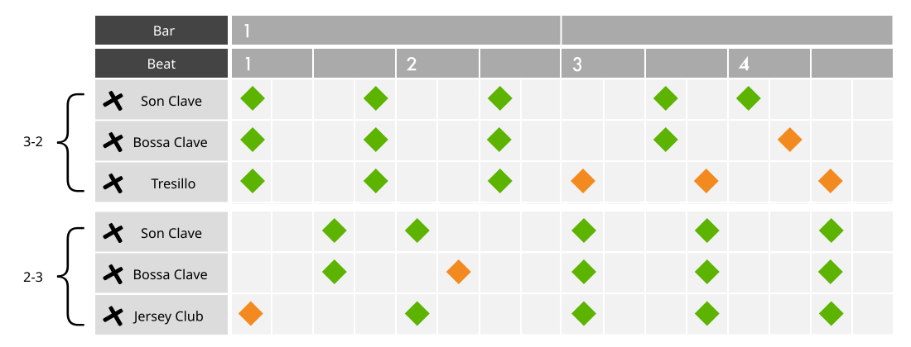

在节奏的长河中流淌着许多历久弥新的经典范式，而其中最为璀璨夺目的皇冠明珠当属克拉维（Clave）。克拉维原本指一种声音清脆坚实的硬木敲击乐器（击木/歌雅木），但在现代音乐学中，它更专门指代起源于古巴及拉丁美洲音乐的核心骨架节奏型。 只要在编曲中注入克拉维节奏，便能瞬间赋予音乐以纯正的热带拉丁活力与摇摆律动。克拉维存在多种变体，本讲将为您系统拆解最具代表性的经典模式。
 1. 前向克拉维：3-2 颂·克拉维（3-2 Son Clave）
1. 前向克拉维：3-2 颂·克拉维（3-2 Son Clave）

首先，在第 1 小节包含 3 次敲击重音、在第 2 小节包含 2 次敲击重音的节奏模式，被称为 3-2 颂·克拉维（3-2 Son Clave）。在自由派乐理的重要参考名著《The Jazz Theory》中，它也被形象地称为前向克拉维（Forward Clave）。
在拉丁音乐中，高音打击乐器就是这样精准敲出这 5 个重音点位，为整首乐曲注入令人神采飞扬的轻快感。
倍速版本（在流行音乐中的应用）
原始的 3-2 克拉维听起来可能颇为悠缓从容，但在现代流行与电子音乐中，将其速度翻倍（Double-speed）压缩至 1 个小节之内的做法更为风靡：

一旦提速到这种节拍密度，想必立刻会唤醒你的大量流行音乐记忆。
流行实战范例
它既可以充当舞曲的核心鼓点重音，也可以像 Coldplay 那样作为吉他或合成器连续扫弦的切分律动，或者像中岛美雪的《地上的星》（地上の星）那样直接化身为人声核心旋律的骨架母题。在此基础上偶尔微调一两个重音以制造变奏，更是百听不厌的经典玩法。
非洲流行音乐的深层渊源
虽然我们在本文中依托中拉美及加勒比音乐理论体系来解构克拉维，但若顺着历史长河溯源，其源头必然不可逆转地指向了非洲大陆的黑人节奏文明。正因如此，在当今西非、南非的顶尖现代流行热单中，同样能极为密集地捕捉到纯正的颂·克拉维律动：
因此，无论你想要营造热带拉美风情，还是渴望为作品注入野性原始的非洲 Afrobeat 能量，克拉维都是立竿见影的核心抓手。在展现跨文化民族性语汇时，节奏永远是不可或缺的灵魂钥匙。
2. 反向克拉维：2-3 颂·克拉维（2-3 Son Clave）
将刚才的前向克拉维倒转——先打 2 击、后打 3 击的形态同样举世闻名：

因敲击顺序颠倒，被称为 2-3 颂·克拉维（2-3 Son Clave） 或 反向克拉维（Reverse Clave）。由于第一小节第一拍正拍被特意留白抽空、从弱处从容切入，听起来散发着一种更为沉稳内敛、优雅时髦的高级成人感。
实际曲目案例
这是经典日常系动画的配乐。鼓棒极为清晰地敲出标准的反向克拉维，搭配俏皮可爱的乐器音色，烘托出阳光幽默的温馨氛围。
倍速版本
与 3-2 相同，将 2-3 克拉维提速一倍压缩在 1 个小节内的手法同样大受欢迎：

流行实战范例
在爆款洗脑神曲 Yukopi 的《强风大背头》（強風オールバック）间奏中，小乌鸦敲击响板的魔性节奏，正是标准的 2-3 倍速反向克拉维！面对四四拍正拍四踩的底鼓，克拉维恰如其分地形成了绝妙的切分错落，四踩底鼓搭档克拉维击木是现代编曲的黄金组合。
东京事变的《进退维谷》（絶体絶命）全曲通篇以 2-3 反向克拉维为骨架。在现场演奏中，前奏鼓组极其鲜明地抛出了这套节奏。深沉幽暗的爵士和声与奔放不羁的拉美克拉维撞击在一起，迸发出令人窒息的戏剧张力。
泽西俱乐部节奏（Jersey Club Beat）
虽然 2-3 反向克拉维第一拍留白的设计极其高级优雅，但在追求纯粹肉体冲击力的俱乐部舞曲（Club Music）中，制作人往往迫切需要在第一拍砸出最强烈的重锤。因此，派生出了一种将第一击向前平移到正拍上的“现代改良版”：

在电子舞曲流派 Jersey Club（泽西俱乐部） 中，这种节奏成为了该风格最具标志性的身份证，通常由沉重的底鼓以该节奏连续轰鸣：
乍听以为是常规四踩，后半程却突然切分跳跃连打 3 击底鼓！这种“前半程极其规整纯朴 × 后半程剧烈切分颠簸”的绝妙平衡，使得 Jersey Club 节奏不仅横扫俱乐部，更被跨界吸收到 K-Pop、J-Pop 与欧美另类 R&B 等各类主流前沿曲风中。
更有甚者，将标准 2-3 反向克拉维与 Jersey Club 节拍在一小节一小节之间交替穿插，构筑出更宏大的循环长周期：
在《Perfect Form》与《Run Free》中，Jersey Club 节拍与 2-3 反向克拉维轮番上阵，交织成层次更为丰富的长循环链条，极大地延缓了听觉疲劳。克拉维凭借其恰到好处的切分反拍，提供了无限改造的弹性空间。
3. 波萨·克拉维（Bossa Clave）
在巴西著名流派**波萨诺瓦（Bossa Nova）**中，创作者将经典的颂·克拉维的最后一击向后挪动至反拍，诞生了独树一帜的形态：

反拍切分的增加，赋予了其更为从容慵懒的沙滩度假风情。这便是著名的 3-2 波萨·克拉维（3-2 Bossa Clave）。
除了作为纯正 Bossa Nova 的灵魂基准外，其倍速版本在现代 EDM 的主奏乐句设计中同样大显身手：
2-3 波萨·克拉维
反向的 2-3 波萨·克拉维 同样活跃在波萨诺瓦经典舞台中：

而一旦将其提速一倍，在现代编曲中会展现出一项无可比拟的巨大优势：它的 5 次打击点位，与流行音乐常规军鼓所在的第 2 拍和第 4 拍正拍（Backbeat）完全没有任何重叠冲突！

这使得它在复杂编曲混音中极为讨巧：既能极大丰满律动的切分层次，又完全不会与军鼓抢夺宝贵的动态响度空间。
4. 特雷西略（Tresillo / 3:3:2 节奏）
如果把前向克拉维的前半段——即仅仅包含前 3 击的那句“哒··哒··哒·”单独截取出来，作为独立的极简循环使用，就构成了流行音乐史上另一大统治级的神级节奏型——特雷西略（Tresillo / 亦称 3:3:2 节奏）[27]。

周期被极度浓缩，利落而充满弹性：
Coldplay 的《Clocks》全曲钢琴琶音通篇贯彻 Tresillo；Ben E. King 的不朽经典《Stand by Me》中，著名的贝斯线条同样忠实构建在 Tresillo 之上。
倍速版本（J-Pop 与流行副歌的王牌）
Tresillo 的倍速版本，是 J-Pop 与现代抒情歌副歌中抓耳度最高的旋律杀手锏：

Mr.Children 的《Any》，副歌（1:13 起）人声旋律反复倾泻这一节奏。尽管曲速从容，却散发着令人情不自禁心潮澎湃的内在奔涌动感，这正是 Tresillo 的魔力。
SMAP 的国民金曲《世界上唯一的花》（世界に一つだけの花），不仅副歌，甚至在主歌 A 段和 B 段中都通篇以此为律动母题；色情涂鸦的《凤蝶》（アゲハ蝶）则由低音贝斯弹奏这一节奏托起全场。
登博节奏（Dembow Rhythms / 雷鬼动）
若将特雷西略的 3 击，巧妙分配给**“底鼓 - 军鼓 - 军鼓”**，便诞生了统治全球拉丁音乐的终极图腾：
在四四拍四踩底鼓的地基上，军鼓在第 2 拍和第 4 拍正拍的前后反拍精准点缀切分，稳定性与身体摇摆感堪称绝配。因牙买加 Dancehall 传奇 Shabba Ranks 的传世名曲《Dem Bow》而彻底定名，在以《Despacito》为代表的**雷鬼动（Reggaeton）**音乐中，它是绝对的唯一主角。
5. 特雷西略的宏大扩张
克拉维、Jersey Club、特雷西略……这些节奏为何具备如此令人无法抗拒的身体吸引力？ 其终极数学与声学核心在于：在 8 或 16 这种偶数“4 的倍数”的宏观框架内，骨子里被注入了奇数“3”的微观非对称切分分割！

Tresillo 将 8 个十六分音符网格，切分为 3 + 3 + 2。顺应这一思维，制作人们研发出了容纳更多“3”的更高阶扩展形态：
双重特雷西略（Double Tresillo / 3:3:3:3:2:2）

将 16 格的小节空间，划分为 3 + 3 + 3 + 3 + 2 + 2 的奇妙格局。这相当于将 Tresillo 的“3”翻倍，被称为双重特雷西略（Double Tresillo）。

U2 的《Beautiful Day》全曲贯穿；在《新世纪福音战士》著名的“屋岛作战”激昂 BGM《Decisive Battle》中，那声震荡心灵的标志性定音鼓狂轰，同样正是这一节拍！紧迫感拉满。
其倍速版本同样被海量应用于先锋电子音乐的 Lead 旋律构建中：
电影《盗梦空间》那段令人喘不过气来的配乐《Mombasa》，凭借这套切分将危机四伏的追逐张力推向了超神之境。
四倍特雷西略与无限宇宙……
若将“3”继续跨越小节线狂飙突进，两小节连续填入 10 个“3”，终盘以“2”拉回平衡：3:3:3:3:3:3:3:3:3:3:2——这便是四倍特雷西略（Quadruple Tresillo）：
连续轰鸣的“3”甚至一度撼动了四四拍原有的重音信仰，为听众带来如同灵魂出窍般的深邃催眠迷幻感（Trip Feel）。电子天团 Underworld 的《and the colour red》更是将“3:3:3……”推向无休无止的无限境地：
各大形态倍速全景速查


在编曲实战中，根据你所渴望的能量密度，灵活掌控“3”与“2”的切分比例，你便握住了主宰舞池与听众肉体律动的无上权杖。
现代流行音乐绝非单凭古典欧洲和声便能独木成林，它是一片汇聚了古巴、加勒比、非洲大陆乃至全球各民族律动基因的汪洋大海。正是这种海纳百川的多元融合，赋予了现代流行乐生生不息的璀璨生命力。
总结
- “克拉维（Clave）”是源自古巴及拉丁美洲的核心骨架节奏型，包含“3-2 颂·克拉维”与“2-3 颂·克拉维”两大基石形态。
- 从克拉维演化而来的“特雷西略（Tresillo / 3:3:2）”及其倍速形态，是统治现代全球流行旋律与雷鬼动（Dembow）节拍的无冕之王。
- 其律动魅力的本质，源于在偶数“4”的宏观周期内注入奇数“3”的微观非对称切分张力。